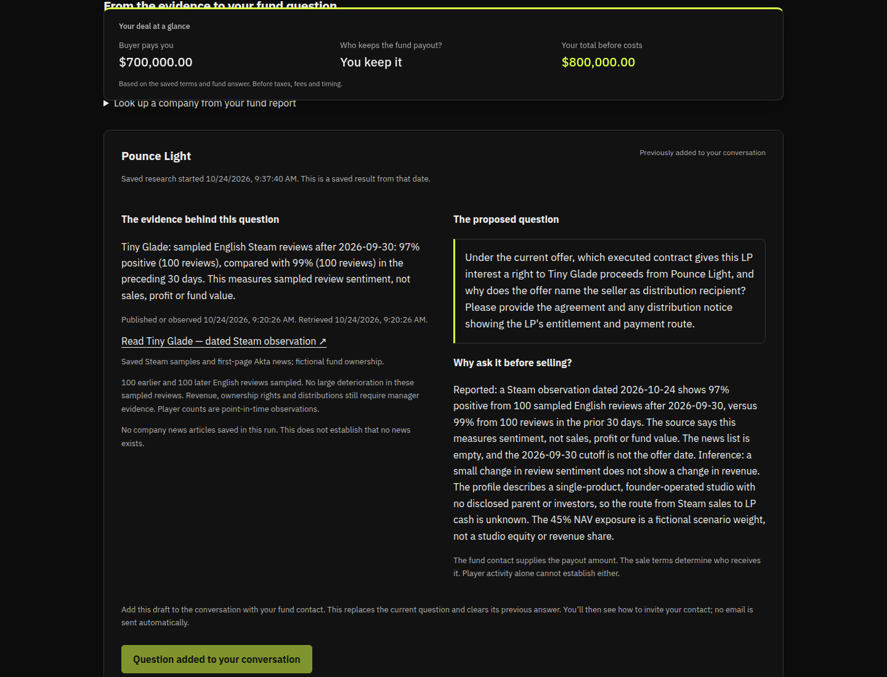
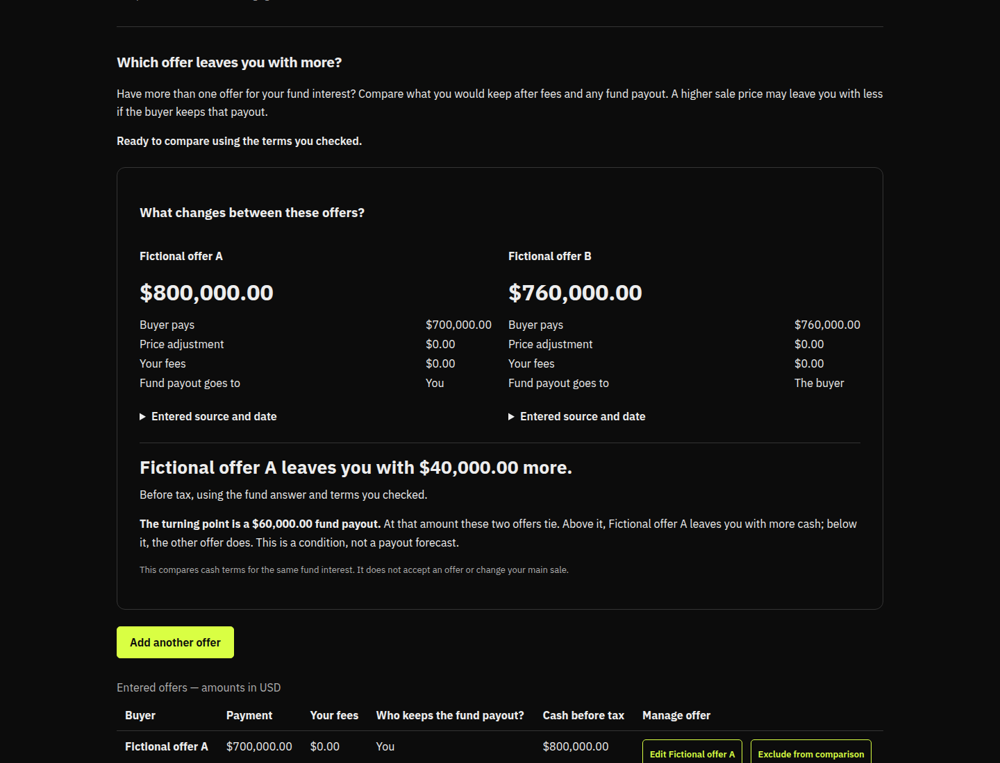

0:00–0:20 · 1 of 3
Would you take the higher offer?
Buyer A offers
$700,000
Buyer B offers
$760,000
The price is only part of what you keep.
Fictional offers for the same fund interest. The next screens are captures from the working app.
0:20–0:45 · 2 of 3
First, who keeps the fund payout?

Captured October 24, 2026 from an isolated example. Real saved outside research; fictional fund, answer and sale terms. Cash comparison before tax.
0:45–1:30 · 3 of 3
The lower offer leaves you $40,000 more.

Captured October 24, 2026 from an isolated example. Real saved outside research; fictional fund, answer and sale terms. Cash comparison before tax.
akta.pro · Company researchNicrronNinoo · Question draftingRoundtable · Shared task historyPRISM by Block Convey · AI call tracing